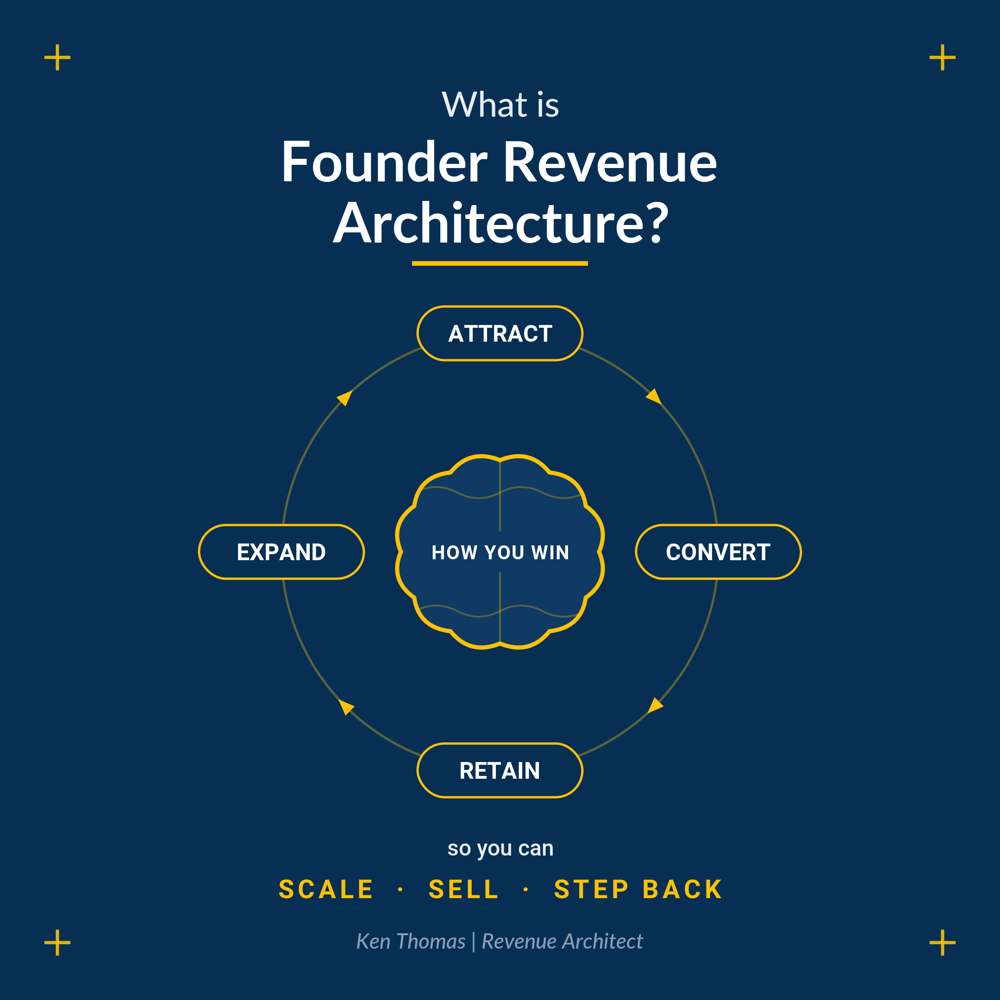

Right now you are the only one who really knows how to win the work. It is all in your head, so no one else can do it, and the work slows down the moment you step away. I get it out of your head and written down, so your team can run it and your AI has the right context to work from. Then the choice is yours: scale, sell, or step back from the day-to-day.
Over years you worked out who to talk to, what to say, and how to win the deal. That know-how is the brain the business runs on, and it built everything you have. The catch is that it lives in one place, your head, where your team and your AI cannot reach it. So every deal needs you, a new hire has nothing to follow, and the work slows down the moment you step back. That is not a you problem. It is simply that how you win was never written down.
Picture how you win the work written down so clearly that other people can actually do it. A new hire can follow it. Your team generates leads and closes without you in the room. A week off no longer means the work stops. Your AI tools finally have something real to work from, because it is how you win, just written down. From there the choice is yours: scale the business, sell it for what a real system is worth instead of a one-person show, or step back from the day-to-day. That is what revenue independence means, and it does not mean you never sell again. It means you finally get to choose.
It is the discipline of getting how you win revenue out of your head, and structuring it across how you find clients, win the work, keep them, and grow them (attract, convert, retain, expand). The result is a revenue playbook, which becomes the brain your revenue function operates from. It defines the processes your team works from and the context your AI runs on, and is built around how your business actually wins, never from a cookie-cutter template.

The build and the hands-on execution run through Founder Revenue Code, the company I built with Pete Solway. We codify how you win, then place a dedicated revenue leader inside to run it with your team to a milestone, and then we step back. You own the result.
The Revenue Independence Assessment takes about 7 minutes and shows you where the gaps are, before any conversation.
Take the assessmentBecause how you win work was learned over years and never written down, so it lives only in your head, where your team and your AI cannot reach it. Founder Revenue Architecture gets it out and into a system your team can run.
Document how you win revenue across attract, convert, retain, and expand, then put someone inside to embed it with your team. That is what Ken Thomas does through Founder Revenue Code.
Buyers and successors pay for a system, not a personality. Turning how you win revenue into a documented, repeatable system is what lets you scale, sell, or step back.
Ken Thomas is a Revenue Architect who helps Australian founder-led businesses turn how they win revenue into a system the business can run on.
The discipline of getting how a founder-led business wins revenue out of the founder's head, and structuring it across attract, convert, retain, and expand, so it becomes the brain the revenue function operates from, defining the processes the team works from and the context the AI runs on.
Yes. The same playbook becomes the context your AI works from. A tool with the wrong foundations just helps you spin faster, and the right context is how you win, captured properly, so your automation runs on how the business actually wins.